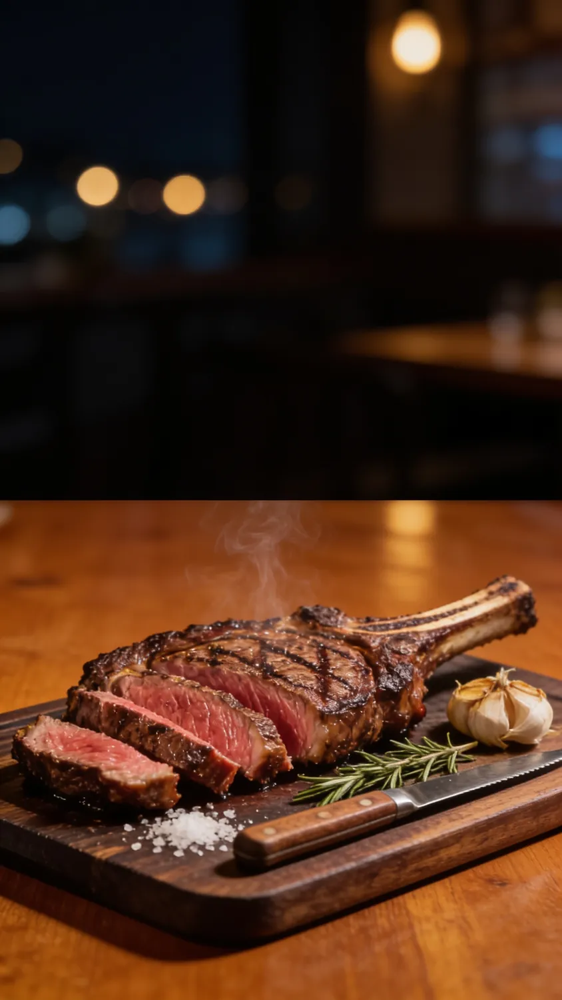
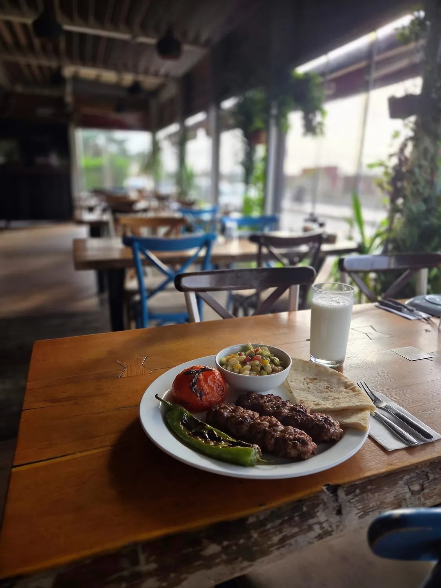
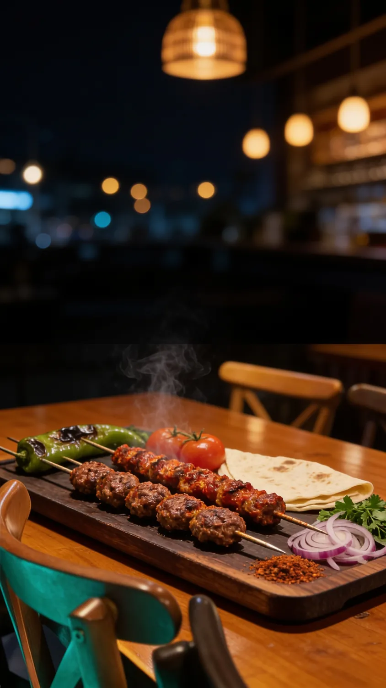
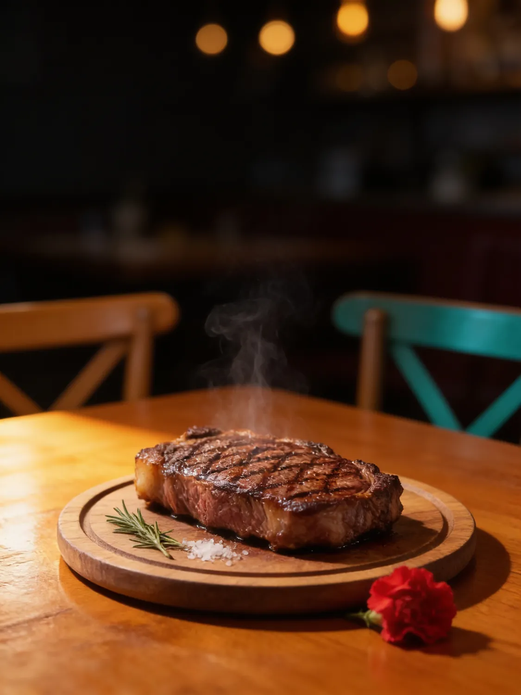
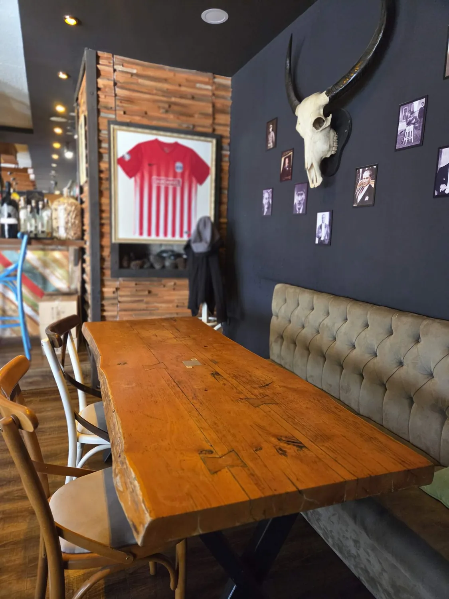
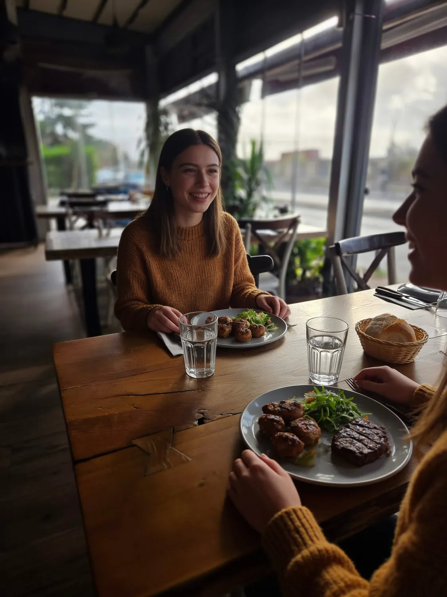

Maç akşamları
Süper Lig ve Avrupa maçları ekranda. Maç günü masalar erken dolar; aramadan gelmeyin.
Çanakkale’de aynı ailenin elinde bir kasap tezgâhı ve onun hemen yanında kurulan sofra. Et bizim, ateş bizim.

Şevk-Et’te kasap da restoran da bizim. Eti kendimiz seçer, kendimiz dinlendirir, kendimiz pişiririz; tabağınıza gelen parçanın nereden geldiğini biliriz.
Menüdeki yemekler mevsimin malzemesiyle hazırlanır ve ateşten çıkar çıkmaz servis edilir. Başlangıçlara, salatalara ve mezelere de yer ayırın.


En çok sorulan beş tabak. Hepsi ve fazlası menüde.






Terastaki dry aged dolabı süs değil. Kemikli parçalar burada dinlenir, lezzeti yoğunlaşır.
Eve götürmek isterseniz kasap bölümünü arayın: köfte, sucuk, sosis ve istediğiniz kesim hazırlanır.
İçeride taş duvar ve kapitone sedirler, dışarıda sarmaşıklı cam teras. Kalabalık da gelseniz iki kişi de gelseniz yer var.





Süper Lig ve Avrupa maçları ekranda. Maç günü masalar erken dolar; aramadan gelmeyin.
Toplu rezervasyonlar için en az bir gün önce arayın. Büyük gruplarda fasıl ekibi de isteyebilirsiniz.
Rezervasyon yaptırın ya da hemen uğrayın. Toplu rezervasyonlar için lütfen en az bir gün öncesinden arayın.